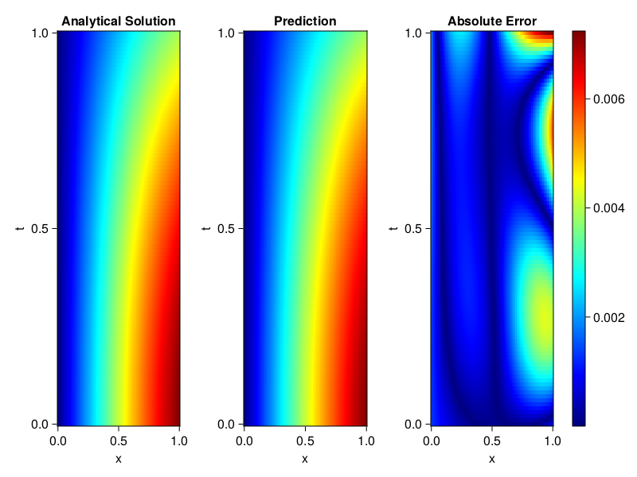
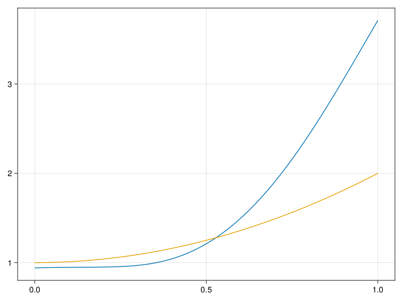

Inverse problem for the wave equation with unknown velocity field
We are going to sovle the wave equation.
using Sophon, ModelingToolkit, IntervalSets
using Optimization, OptimizationOptimJL
@parameters x, t
@variables u(..), c(..)
Dₜ = Differential(t)
Dₜ² = Differential(t)^2
Dₓ² = Differential(x)^2
s(x,t) = abs2(x) * sin(x) * cos(t)
eq = Dₜ²(u(x,t)) ~ c(x) * Dₓ²(u(x,t)) + s(x,t)
bcs = [u(x, 0) ~ sin(x),
Dₜ(u(x, 0)) ~ 0,
u(0, t) ~ 0,
u(1, t) ~ sin(1) * cos(t)]
domains = [t ∈ Interval(0.0, 1.0),
x ∈ Interval(0.0, 1.0)]
@named wave = PDESystem(eq, bcs, domains, [t,x], [u(x,t),c(x)])\[ \begin{align} \frac{\mathrm{d}}{\mathrm{d}t} \frac{\mathrm{d}}{\mathrm{d}t} u\left( x, t \right) =& c\left( x \right) \frac{\mathrm{d}}{\mathrm{d}x} \frac{\mathrm{d}}{\mathrm{d}x} u\left( x, t \right) + \cos\left( t \right) \left|x\right|^{2} \sin\left( x \right) \end{align} \]
Here the velocity field $c(x)$ is unknown, we will approximate it with a neural network.
pinn = PINN(u = FullyConnected((2,16,16,16,1), sin),
c = FullyConnected((1,16,16,1), tanh))
sampler = QuasiRandomSampler(500,100)
strategy = NonAdaptiveTraining(1, (10,10,1,1))NonAdaptiveTraining{Int64, NTuple{4, Int64}}(1, (10, 10, 1, 1))Next we generate some data of $u(x,t)$. Here we place two sensors at $x=0.1$ and $x=0.5$.
ū(x,t) = sin(x) * cos(t)
x_data = hcat(fill(0.1, 1, 50), fill(0.5, 1, 50))
t_data = repeat(range(0.0, 1.0, length = 50),2)'
input_data = [x_data; t_data]
u_data = ū.(x_data, t_data)1×100 Matrix{Float64}:
0.0998334 0.0998126 0.0997503 0.0996464 … 0.275281 0.267213 0.259035Finally we construct the inverse problem and solve it.
additional_loss(phi, θ) = sum(abs2, phi.u(input_data, θ.u) .- u_data)
prob = Sophon.discretize(wave, pinn, sampler, strategy; additional_loss=additional_loss)
@time res = Optimization.solve(prob, BFGS(), maxiters=1000)u: ComponentVector{Float64}(u = (layer_1 = (weight = [-0.370340765377886 -0.9846722200355416; 0.695942341747822 1.668874718187269; … ; -0.7768480162094601 -0.6562199517201488; -0.30053217743194216 -0.9917069299022041], bias = [0.2572084613105219; -0.37032695760884143; … ; -0.010462350813214493; 0.2849593957427889;;]), layer_2 = (weight = [0.4799460690974992 -0.449747998531039 … 0.5005518462683538 -0.056968948038635704; -0.0975807041488716 -0.3856715159965846 … -0.06733160926112108 0.5756617206026561; … ; -0.5474942636331587 -0.04520091342887217 … -0.33234882742594235 -0.03519097080100486; 0.5847953257890168 0.5151119414136494 … 0.48258555776268386 -0.6040280585347327], bias = [-0.061308051779096664; -0.1445848513909385; … ; 0.4277943056306273; -0.0034365612167942612;;]), layer_3 = (weight = [0.3640515624230774 -0.5870707236814617 … 0.11471215124855713 0.35083470397157024; -0.5232052551351549 0.17167400112623302 … -0.0591444782270691 -0.2085251951306584; … ; -0.2451730177490859 0.294778376692524 … -0.27597834688731465 0.06713913132724687; 0.48069552222787376 0.45074616893664327 … -0.03549409712890529 -0.08078010120817643], bias = [0.23469261281590506; 0.14742647454465907; … ; -0.12400639013316377; -0.1715684157297735;;]), layer_4 = (weight = [0.04158527142331825 0.26888911883478495 … 0.02402414931567397 -0.3849071962349719], bias = [-0.13044265959217177;;])), c = (layer_1 = (weight = [-1.8544826116823834; 2.027029533472647; … ; -0.3182872867902683; -0.524181914776864;;], bias = [-0.3199207564893961; 0.35768104835366804; … ; 0.07774089421747049; 0.13531005097239468;;]), layer_2 = (weight = [-0.6057229846361945 -0.07995109308299025 … 0.4241210123143195 -0.46124240777326087; 0.6238740181134249 -0.1347988879113577 … -0.12028409308066136 -0.15377029061900147; … ; 0.22453484190653514 -0.1376873288597959 … 0.7871773454423806 -0.11595167305721713; 0.4433077358921766 -0.3945807355817655 … -0.6110490142091947 0.5774038014916554], bias = [0.14040139956288872; -0.005239118621681157; … ; -0.06828713122939623; 0.14633932789045043;;]), layer_3 = (weight = [0.2539127611206581 -0.35277012048961026 … -0.5480485541570824 0.30972004687157845], bias = [0.46299864212132064;;])))Let's visualize the predictted solution and inferred velocity
using CairoMakie
ts = range(0, 1; length=100)
xs = range(0, 1; length=100)
u_pred = [pinn.phi.u([x, t], res.u.u)[1] for x in xs, t in ts]
c_pred = [pinn.phi.c([x], res.u.c)[1] for x in xs]
u_true = [ū(x, t) for x in xs, t in ts]
c_true = 1 .+ abs2.(xs) |> vec
axis = (xlabel="x", ylabel="t", title="Analytical Solution")
fig, ax1, hm1 = heatmap(xs, ts, u_true, axis=axis; colormap=:jet)
ax2, hm2= heatmap(fig[1, end+1], xs, ts, u_pred, axis= merge(axis, (;title = "Prediction")); colormap=:jet)
ax3, hm3 = heatmap(fig[1, end+1], xs, ts, abs.(u_true .- u_pred), axis= merge(axis, (;title = "Absolute Error")); colormap=:jet)
Colorbar(fig[:, end+1], hm3)
fig
fig, ax = lines(xs, c_pred)
lines!(ax, xs, c_true)
fig